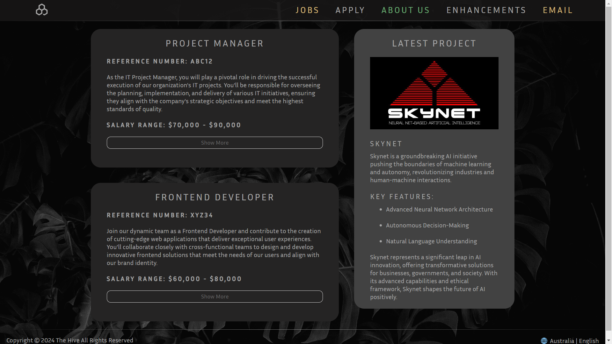
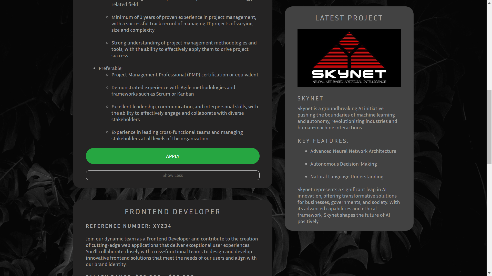

Media Queries
How it goes beyond the basic requirements of the assignment
Since we have been making extensive use of the css
grid property, implementing responsiveness via
min-width and max-width was insufficient for
our website. Therefore, the @media query was used in
order to dynamically modify css depending on the screen-size.
Code Needed
This type of code is designed to dynamically modify the form elements to change the margin and width on smaller screens
@media screen and (max-width: 768px) {
form {
place-self: center;
min-width: 90%; /* Adjust form width on smaller screens */
margin: 20px 5%; /* Adjust form margin on smaller screens */
}
}
References
Using Media Queries - MDNExamples
Try resizing these pages to see the media query in effect!
Homepage
Apply
Section Expansion
How it goes beyond the basic requirements of the assignment
Jobs.html quickly became encumbered, after many iterations it became clear an enhancement was
necessary.
making use of the minimal knowledge provided by lab 3. Jobs.html exploits the usage of form
related tags.
The page (Jobs), presents itself in a compact version allowing the user to only see relevant information.
This is done by concealing the additional information within span tags,
combined with input: checkbox and label a dynamic button is created to control the
function.
Code Needed
This code uses form attributes in conjunction with pseudo-classes/elements to create a fluid user experience.
/* Removes checkbox */
.readMoreState {
display: none;
}
/* Hides content */
.readMoreTarget {
display: none;
opacity: 0;
max-height: 0;
font-size: 0;
transition: .25s ease;
}
/* Sets content visible */
.readMoreState:checked ~ .readMoreWrapper .readMoreTarget {
display: block;
opacity: 1;
font-size: inherit;
max-height: 999em;
}
/* Changes label text (Before) */
.readMoreState ~ .readMoreTrigger:before {
content: 'Show More'
}
/* Changes label text (After) */
.readMoreState:checked ~ .readMoreTrigger:before {
content: 'Show Less'
}
References
Semantic LayoutGrid Styling
Pseudo Classes
Pseudo Elements
Pseudo Classes [Extended]
HTML forms
HTML forms [Extended]
Examples
Click Here to try it out!
 